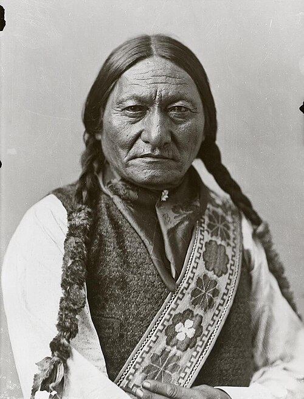
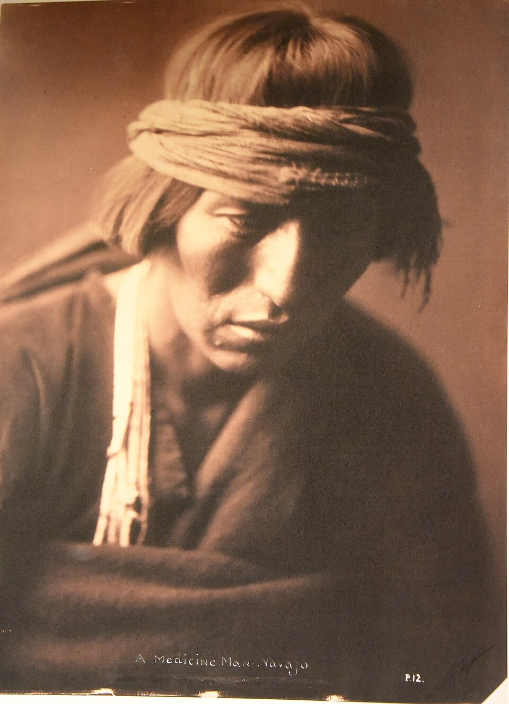
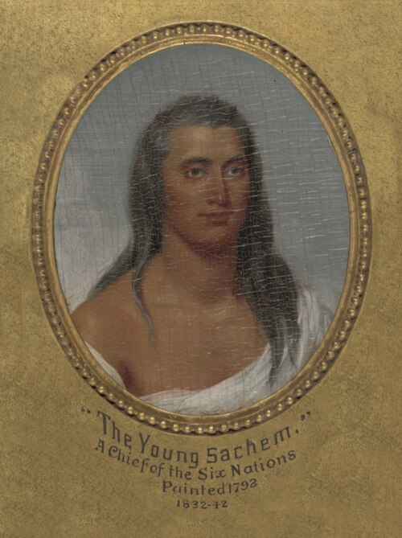
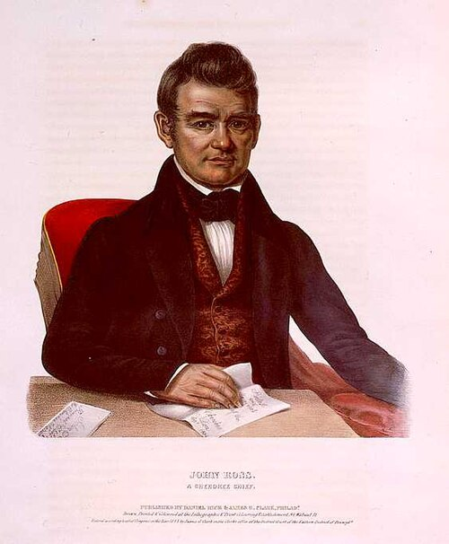
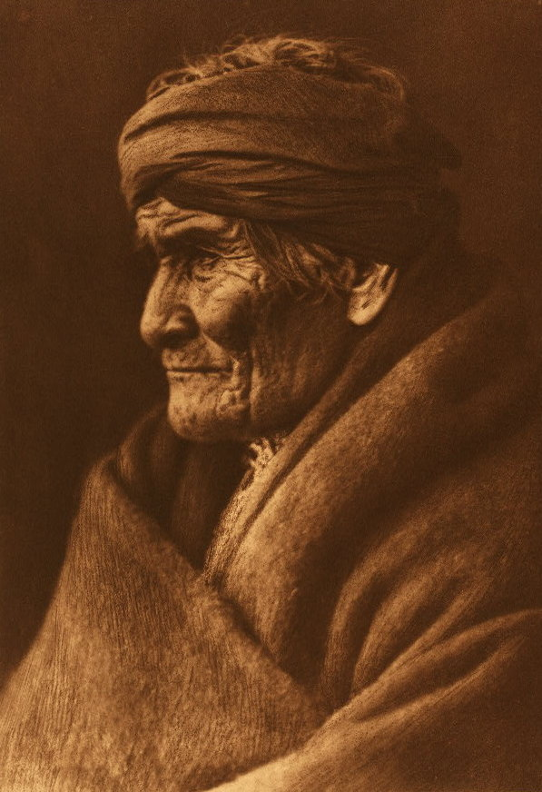
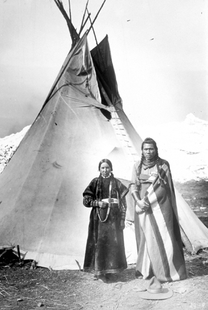
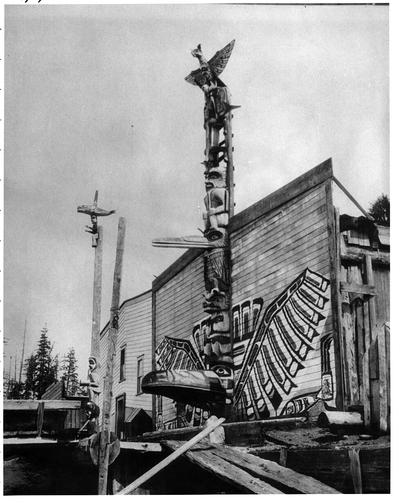
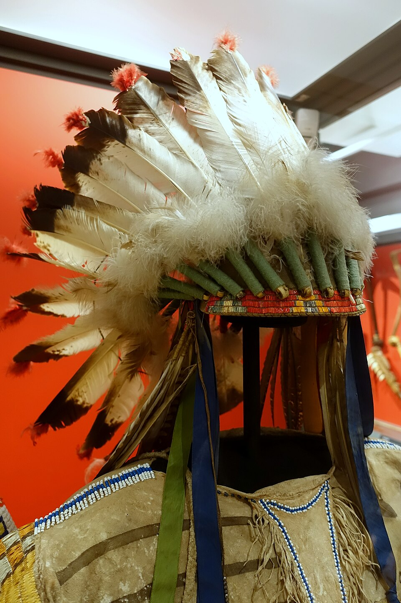
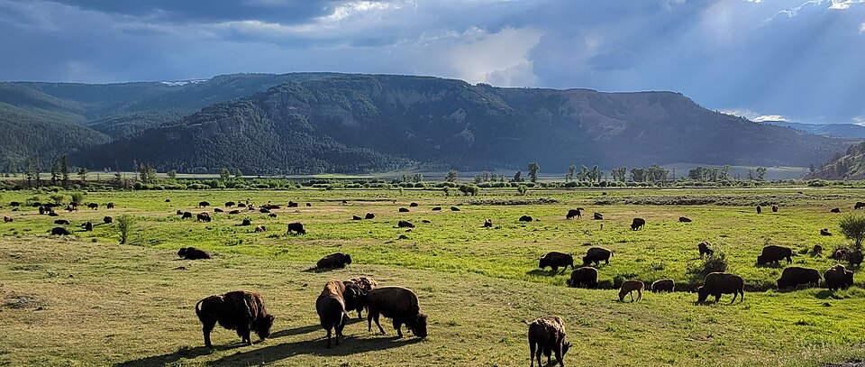

The world of North America's first peoples, thousands of years in the making
Paleoanthropological and genetic research shows that the ancestors of North America's first peoples came from Siberia and the vast Asian steppes. About 15,000 to 20,000 years ago, during a period when the Bering Strait was frozen, hunter-gatherer communities crossed this passage and set foot on the new continent.
Some hereditary and cultural traces of these early migrants still parallel the peoples of the Altai, Siberia and the Far East today. Mitochondrial DNA studies have revealed that Native Americans descend from a single genetic pool (similar to the ancient Mal'ta-Buret culture in Siberia).
Note: Establishing a direct line of descent between Native Americans and modern Turkic peoples is not scientifically accepted; however, both peoples share a broad hunter-gatherer heritage rooted in the deep history of the Asian steppes.
Click on the cards for detailed information

The famous mounted hunters of the Great Plains. Their resistance, led by figures like Sitting Bull and Red Cloud, has become legendary.
📷 Sitting Bull, Montreal 1885 · Public domain
▼The mounted nation of the Great Plains. The Lakota are one of North America's best-known Native peoples. The great alliance called "Oceti Sakowin" (Seven Council Fires) consists of peoples speaking the Dakota, Nakota and Lakota dialects.
In 1876 they defeated Colonel Custer's 7th Cavalry Regiment at the Battle of Little Bighorn. Their leaders Sitting Bull and Red Cloud organized the most effective resistance against the United States' westward expansion.
The Sun Dance and the Vision Quest hold an important place among their religious rituals. The buffalo (bison) was both a food source and a sacred being. Today they live on the Pine Ridge and Rosebud reservations in South Dakota.
The 1890 Wounded Knee Massacre is the most tragic event in Lakota history. The shooting of unarmed civilians became the symbolic end of armed resistance.

Famous for weaving and sand painting art; the tragedy of the "Long Walk" has left its mark on their history.
📷 Navajo medicine man, E.S. Curtis 1900 · Public domain
▼They call themselves Diné (The People) and are today the most populous Native tribe (over 170,000 people). They live in the deserts and plateaus of the southwestern US (Arizona, New Mexico, Utah).
The tragedy of the "Long Walk" in 1864 was the forced march of more than 10,000 Navajo to the Bosque Redondo internment camp. Hundreds died of hunger and disease. The 1868 treaty allowed them to return to their homeland.
Their sand painting and rug weaving have gained worldwide fame. Their round adobe homes, the Hogan, are designed to keep the sun's warmth inside.
In World War II, the Navajo Code Talkers developed a military code language that the Japanese could never break. Around 800 Navajo served in the Pacific theater this way.

The union of six nations — with its democratic council system, one of the world's oldest living federations.
📷 "Young Chief", J. Trumbull · Public domain
▼The Haudenosaunee (People of the Longhouse) are the world's oldest living democratic confederation. It consists of five, later Six Nations: the Mohawk, Oneida, Onondaga, Cayuga, Seneca and the Tuscarora, who joined later.
The Great Law of Peace, founded in 1142 AD, was praised by a framer of the US Constitution as "the most perfect system of government." The dome of the White House was inspired by the Haudenosaunee council house, the Longhouse.
Society is dominated by a matrilineal system (descent is traced through the mother). Women own land and can exercise veto power over decisions of war and peace.
They are the inventors of the game of lacrosse. The legend of "Hiawatha" and the Tadodaho legend tell of the founding of the union. Today they live on lands between New York State and Ontario, Canada.

A deeply rooted people who developed their own alphabet, published a newspaper and had a constitution. Chief John Ross.
📷 Chief John Ross · Public domain
▼They call themselves Aniyunwiya (The Real People). They built a deeply rooted civilization in the forested mountains of the southeastern US (Georgia, Tennessee, North Carolina). With a 5,000-year history, they are one of the oldest Native peoples.
In 1821, Sequoyah developed an 85-character syllabary, becoming the only hunter-gatherer in history to invent his own alphabet. In 1828 the Cherokee Phoenix newspaper became the first Native American newspaper. The constitution written in 1827 is the first constitution of a Native nation.
Chief John Ross (1790-1866) was an education reformer and leader. But the "Trail of Tears" (1838-39), which followed the Indian Removal Act of the 1830s, resulted in the forced removal of 16,000 Cherokee to Oklahoma and the death of 4,000 along the way.
Today they live as two main communities: the Eastern Band of Cherokee (North Carolina) and the Cherokee Nation (Oklahoma).

Brave warriors perfectly adapted to desert and mountain life, known through their leader Geronimo.
📷 Geronimo, E.S. Curtis · Public domain
▼They call themselves Nde (The People). The name "Apache" actually means "enemy" in the Yuma language. They live in the deserts, mountains and canyons of the southwestern US and northern Mexico. There are six main groups: Chiricahua, Mescalero, Jicarilla, Lipan, Western Apache and Plains Apache.
Geronimo (1829-1909; real name Goyathlay) went down in history with a 25-year resistance. Until 1886 he waged guerrilla warfare in the desert against the US and Mexican armies. He eventually surrendered and was imprisoned in Florida, never regaining his freedom until his death.
Another important leader, Cochise (Chiricahua), made peace in 1872 after 12 years of war. The Apache are unmatched in the art of moving without leaving traces, hiding and surviving in the desert.
The Sunrise Dance is a sacred ritual celebrating girls' transition to adolescence. Basket weaving and war songs are also important parts of their culture.
Giant earthen mound cities like Cahokia were the great cities of pre-European North America. Civilization flourished in the Mississippi valley.
▼Before the Europeans arrived, North America was home to quite advanced civilizations. The largest of these is Cahokia (near present-day Illinois, 1050-1200 AD). With a population of 20,000, it was more populous than London at the time.
Monks Mound at the center of Cahokia, at 30 meters high with a 7-hectare base, is the largest earthen mound in North America. Astronomical observation areas, elite burials and a complex social structure have been found here.
Earlier, the Adena (1000 BC - 200 AD) and Hopewell (200 - 500 AD) cultures built administrative centers, long-distance trade networks (copper, obsidian, seashells) and great ceremonial mounds in the Ohio Valley.
Serpent Mound (Ohio), a 411-meter-long serpent-shaped mound, is the world's largest effigy (figurative) mound. Poverty Point (Louisiana, 1700 BC) is one of the world's oldest large complexes.
Against the land loss, forced migration and assimilation policies that began with the arrival of Europeans, Native peoples resisted for centuries. This resistance took shape across a broad spectrum, from armed struggle to legal and cultural struggle.
Today, despite the pains of the past, Native peoples living in North America are working to protect their languages, cultures and land rights. There are more than 570 recognized tribes and bands in the US and Canada.
While there were more than 300 Native languages 200 years ago, only about 170 are spoken today, and many are endangered. Today many communities are establishing schools and camps to teach children their mother tongues.
Many land cases have been won since 1980. For example, in 2022 the US government agreed to return western Montana lands stolen a century ago to the Crow tribe.
Native directors, writers and artists are telling their own stories themselves. Films like "Prey" (2022) and the series Reservation Dogs are examples of the Native perspective being carried into mainstream media.
Native activists are leading the way on issues such as protecting groundwater (the Missouri River basin), protecting sacred sites from mining, and forest rights.
The mythology of Native peoples is a rich world intertwined with nature, where animal spirits and heroes reign. These stories have been passed down from generation to generation.
For many Native peoples, the wolf is a symbol of creation and rebirth. According to Lakota mythology, the first humans fell from the universe as wolves and later turned back into humans.
The eagle is known as the Son of the Skies and is one of the most sacred animals. Its feathers are added to war bonnets, carrying courage and honor. Eagle dreams are the most supreme messages.
In many tribes, the bear is the keeper of healing knowledge. According to Cherokee legend, the first humans learned the healing of plants from bears. The bear's hibernation symbolizes death and resurrection.
In Lakota legend, the White Buffalo Calf Woman is a sacred prophet. She came with a white buffalo calf and brought the peace pipe to the People. The birth of a white buffalo is a sacred sign.
In Iroquois legend, the Thunderer is a giant bird. When it flaps its wings, storms and lightning are born. The water monster Mitla also lies at the origin of the Mississippi.
A spiritual movement started in 1890 by the Paiute leader Wovoka. Dancers in white garments believed that the land would be returned and the ancestors would come back to life.
Although the place of women in Native societies varied from tribe to tribe, many communities had strong female autonomy and prestige. In matrilineal systems descent was traced through the mother; land and home belonged to the woman.
Photos are taken from Wikimedia Commons under free license. Click to enlarge.




"We did not inherit the land; we borrowed it from our children."
— Native American proverb
"Listen with your heart; you will hear the song of the earth."
— Lakota teaching